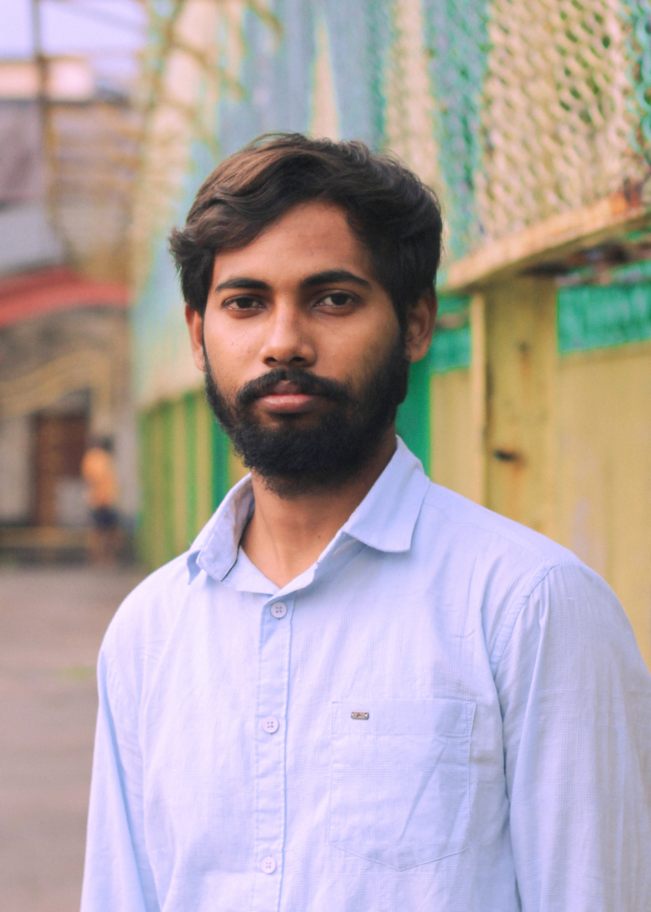

ARTIST / FILMMAKER
CHIRANTAN
BISWAS
Film · Sculpture · Illustration · Experimental Art
EXPLORE MY WORK ↓SELECTED WORKS
MY WORLD
ABOUT
ARTIST.
FILMMAKER.
DREAMER.
I am Chirantan Biswas, born on 8 August 2001 in Medinipur, India. I come from a farming family; my mother, Nomita Biswas, and my father, Tapas Kumar Biswas, are farmers. Growing up in this environment has shaped the way I see life, people, nature, and everyday struggles, and these experiences continue to influence my artistic practice.
My work explores the intersection of futuristic imagination, surrealism, and human emotion. I am interested in imagining possible futures and exploring how technology, society, environment, and human aspirations may change over time. I graduated from the Government College of Art & Craft, Calcutta, where I developed a strong foundation in traditional modelling and sculpture. These disciplines continue to influence my visual language, especially in the way I approach form, space, movement, and storytelling in my cinematic and artistic work.

AWARDS
RECOGNITION
& ACHIEVEMENTS.
Received a Merit Award for Water Colour at the 156th Government College of Art & Craft, Calcutta Annual Exhibition.
Received Merit Award for Wood Toy at the 156th Government College of Art & Craft, Calcutta Annual Exhibition.
Received College Award for Kinetic Sculpture at the 158th Government College of Art & Craft, Calcutta Annual Exhibition.
Received Merit Award for Kinetic Installation at the 159th Government College of Art & Craft, Calcutta Annual Exhibition.
My short film, THE LUMINARY SAPLINGS, got official selection by INDICA Dallas Film Utsav & INDICA Heritage Film Utsav or Lift-Off Global Network film festivals.
CONTACT